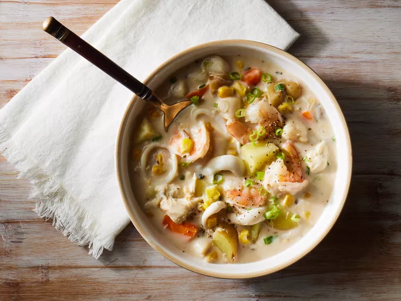

Mincemeat Pie
Home

Description
Dive into this creamy seafood chowder, brimming with shrimp, scallops, and crab, perfectly seasoned and served warm for a hearty and comforting meal.
Ingredients
- 1 (8 ounce) container fat free cream cheese
- 1 ½ cups fat free milk
- 2 cloves garlic, minced
- 1 (23 ounce) can fat free condensed cream of mushroom soup
- 1 (15.25 ounce) can whole kernel corn, undrained
- 1 ½ cups chopped potatoes
- 1 cup chopped green onions
- 1 cup sliced carrots
- 1 teaspoon dried parsley
- ½ teaspoon ground black pepper
- ½ teaspoon ground cayenne pepper
- ½ pound shrimp
- ½ pound bay scallops
- ½ pound crabmeat
- ½ pound calamari tubes
- 1 (6.5 ounce) can chopped clams
Steps
- Gather all ingredients.
- Combine cream cheese, 1/2 cup milk, and garlic in a large pot over low heat; cook and stir until blended, about 3 minutes.
- Mix in condensed soup, undrained corn, remaining 1 cup milk, potatoes, green onions, carrots, parsley, black pepper, and cayenne pepper.
- Cook for 25 minutes at a simmer; do not boil.
- Add shrimp, scallops, crab, calamari, and clams; cook until seafood is opaque, about 10 minutes.